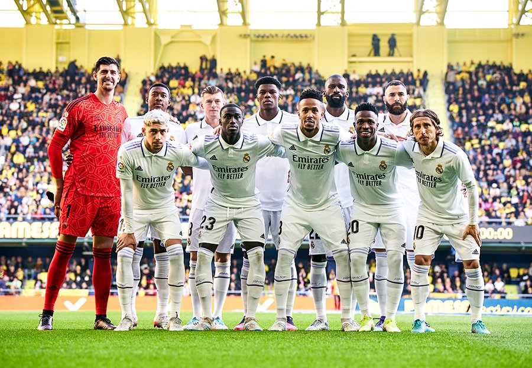
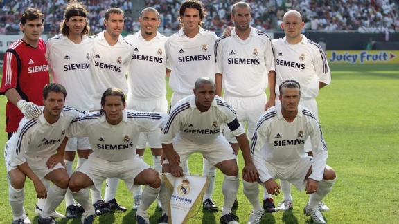

Het heden en verleden
In 1954 kwam het Franse dagblad l’Equipe met het idee om de beste teams van Europa tegen elkaar te laten spelen om de Europa Cup. De voorzitter van Real Madrid Santiago Bernabéu wilde van deze gelegenheid gebruik maken om te laten zien dat zijn Real Madrid het beste team was, dat in Europa speelde. De steenrijke Bernabéu voegde de daad bij het woord en zorgde ervoor, dat de beste voetballers van de hele wereld de gang naar Madrid namen. Het verhaal begint in 1943 wanneer Santiago Bernabéu voorzitter van de middenmoter Real Madrid wordt. Hij wilde van Real Madrid een Spaanse topclub maken die jaarlijks mee zou strijden om de prijzen. Door een slim financieel beleid werd Real elk jaar een beetje beter en mengde zich halverwege jaren 50 in de strijd om de Spaanse titel. Toen het Europa Cup toernooi kwam wilde Bernabéu ook daar een rol van betekenis gaan spelen. Daarvoor moest hij echter over de Spaanse landsgrenzen gaan kijken voor topvoetballers.
Grote spelers komen naar Madrid Met name de allereerste grote transfer had nogal wat voeten in aarde. Zowel Real Madrid als Barcelona kwamen Alfredo di Stéfano op het spoor. Deze voetballer van het Colombiaanse Millionaros gold destijds als beste voetballer van de wereld. Beide Spaanse clubs dongen naar de gunsten van deze oorspronkelijk Argentijnse speler. De ruzie tussen de twee clubs liep zo hoog op dat de Spaanse bond ingreep en besloot dat di Stéfano eerst een jaar bij Real zou spelen en het jaar erop bij Barcelona. De Catalanen zagen tot grote vreugde van Bernabéu af van de transfer. Ook in eigen land speurde Real naar talenten. In 1953 werd de supersnelle Francisco Gento van Racing Santander gehaald. Deze linkerspits was bleek van grote klasse. Voor elke andere positie werden zo veel mogelijk buitenlandse topspelers gehaald. Gento was de enige Spanjaard die gedurende zijn hele loopbaan onomstreden bleef. Hij is tevens de enige speler die alle acht Europa Cup I finales van Real Madrid tussen 1956 en 1966 meespeelde. Zelfs in de Europa Cup II finale van 1971 speelde hij mee.
Bovendien kon Real Madrid nu gaan bewijzen dat ze de beste ploeg van de wereld hadden. In 1960 werd er namelijk voor de allereerste maal om de wereldbeker voor clubs gespeeld tussen de winnaar van de Europa Cup I en de winnaar van de Zuid-Amerikaanse Copa Libertadores. Uit werd het een moeizame 0-0, thuis bleek Real werkelijk de beste van de wereld, het werd 5-1. Didi zat deze wedstrijden niet eens meer op de bank. Hij was na twee teleurstellende seizoenen weer teruggekeerd naar Botafogo in Brazilië. Niet alle transfers waren dus een succes. Ook de Argentijnse rechtsbuiten Herrera, opvolger van Kopa, verbleef slechts 1 seizoen in de Spaanse hoofdstad.